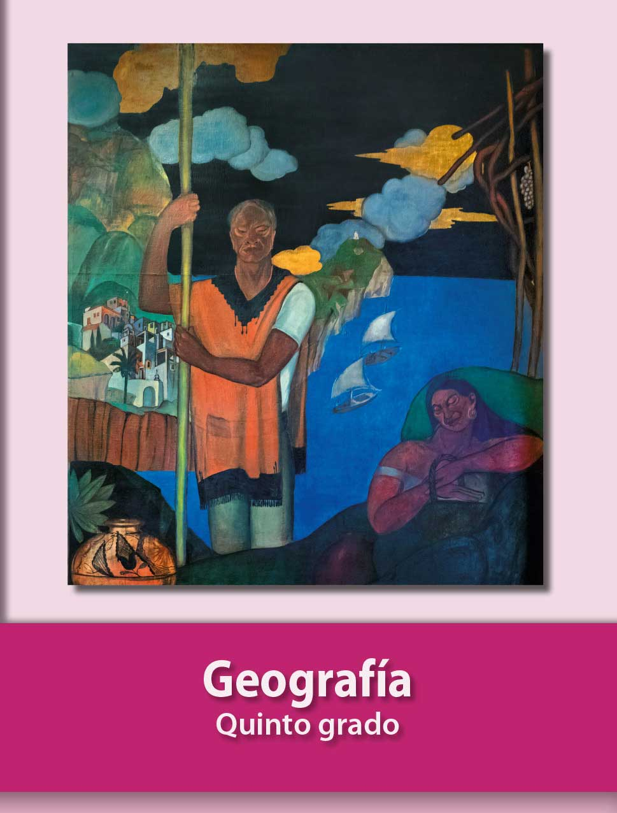

Hecho por Santiago Norzagaray, Benjamín Díaz, Gabriel Rangel y Ignacio Manjarrez.
Historia y Geografía
Regiones geográficas de América. La subdivisión del continente americano se debe a criterios de carácter fisiográficos, socioculturales y políticos;Por ejemplo, por las características del relieve determinado por la dinámica de las placas tectónicas conincide con criterios de carácter político, y lo divide en América del Norte, América Central, las Antillas y América del Sur;mientras que por criterios socioculturales, como la lengua, se divide en América Anglosajona, donde se habla inglés; y América Latina, donde mayormente se habla español.
Países más y menos poblados En el siglo pasado el desarrolo tecnológico transformó la forma de vida de la población mundial. Disminuyó el interés por las actividades agropecuarias al aumentar la importancia de los sectores industrales y de servicios. Esta trnsformación se reflejó, entre otras cosas,en el crecimiento de la población, que se quinntuplico en cien años y varió su distribución.
La distribución de la población en el mundo Así como obserbaste que existen difrencias en el clima, la vegetación y la fauna de las regiones naturales de los continentes, también se presentan difrencias en la forma en que se distribuye la población, pues en algunos continentes hay más países sobrepoblados que con escasa población. En 2015, la población absoluta o total del mundo se calculó en 7 300 millones de habitantes, los cuales están distribuidos irregularmente y su crecimiento no sigue el mismo ritmo en las diversas regiones continetales. Como algunos países que tienen mucho territorio pero poca población y al revéz. Según los datos regristrados por la Organización de las Naciones Unidas(ONU),en 2018,China era el país más poblado del mundo,con 1440 millones de habitantes, y le sigue India, con 1 390 millones de habitantes.
Ciudad y campo Dentro del territorio nacional, la población se distribuye de manera desigual o heterogénea; lo mismo ocurre a manera continental y mundial. Hay ciudades sobrepobladas, como Tokio y la Ciudad de México, y lugares donde casi no hay gente, por ejemplo, el Sahara al norte de África, o la región de Siberia, en Rusia.
Lo urbano y lo rural En las ciudades o urbes se concentra mayor población; en ellas se proporciona la mayoría de los servicios tales como hospitales,escuelas,empleos o centros de entretenimiento. México, un poblado que concentra a más de 2500 personas puede considerarse una localidad urbana.
Diferencias y relaciones entre el campo y la ciudad El número de habitantes no es lo único que distinguue un espacio rural de uno urbano; también influyen en esta diferenciación las actividades que realizan las personas,la cantidad y calidad de los servicios, la distribución de las construcciones y la forma de vida.
Las actividades primarias En el sector primario se agrupan la agricultura, la ganadería, la explotación forestal, la pesca y la minería, así como todas las actividades donde se aprovechan los recursos naturales sin modificarlos, es decir, tal como se extraen de la naturaleza.
Actividades agropecuarias y factores naturales Las actividades agropecuarias requieren de condiciones naturales apropiadas para desarrollarse.Los diversos cultivos y diferentes crías de ganadose ven influidos por factores como el suelo, la altitud, el tipo de relieve y la hidrografía ,pero principalmente por el clima.Todo vegetal y animal requiere un medio adecuado para reproducirse;además,un medio que resulta propicio para uno puede no serlo para otro,lo cual ah originado la diversidad de regiones agrícolasy pecurias.
Participantes en el movimiento de independencia En 1810, Miguel Hidalgo,Ignaci Allende, Josefa Ortiz de Domínguez y Juan Aldama se reunieron en Qerétaro, y para septiembre de ese año Hidalgo y Allende se levantaro en armas. Fueron vencidos y fusilados en junio de 1811. José María Morelos y pavón encabezo la rebelión desde 1812. En 1814 , Fernando VII recupera el trono de España y elimina la Constitución liberal de 1812. A finales de 1815 Morelos fue fusilado después de proclamar los “sentimientos de la nación” documento que plantea la independencia de América. Su muerte afectó al movimiento indepentista.Muchos insurgentes aceptaron el perdón ofrecido por el virrey apodaca en 1816 y dejaron las armas. Otros, como Vicente Guerrero, mantivieron la lucha hasta 1821 mediante ataques rápidos a los realistas.
El porfiariato Estabilidad, desarrollo ecónomico e inversión extrangera En el área económica, Porfirio Díaz, buscó atraer inverciones extranjeras, para hacer negocios en México. La minería, la electricidad, el petróleo, la constitución de ferrocarriles, la producción de hilados y tejidos, las actividades bancarias y en general las comunicaciones (teléfonos, telégrafos y puertos) fueron las principales actividades ecónomicas de la época, que atrajeron inversiones de empresarios de Estados Unidos, Francia, Alemania e Inglaterra. Gracias a las inversiones, tanto extranjeras como nacionales, se reactivó el comercio, se destimuló el crecimiento de las ciudades, se generó empleo y se impulsó la producción agrícola;esto permitió que mejoraran las condiciones de vida de la clase media y de los profesionistas.No obstante, los beneficios de esta prosperidad no llegaron a los otros sectores de la población, como campesinos, obreros, artesanos, jornaleros, pequeños comerciantes e indígenas. Hacia 1884, la inversíon extranjera era de 100 millones de pesos; para finales del Porfiriato se elevó 34 veces más y estaba repartida como se indica en la siguiente tabla. Países* Porcentajes de inversión Alemania Estados Unidos Francia Holanda Inglaterra otros *Países que invirtieron en agricultura,industrias textil petrolera y minera.
La Revolución Mexicana El maderismo y el inicio de la Revolución Mexicana Hacia finales del siglo XIX y principios del XX se formaron distintos grupos políticos que exigieron elecciones demócraticas. Asimismo se fundaron periódicos opositores al gobierno, como El Hijo del Ahuizote en 1885, El Demócrata en 1893, Regeneración en 1900 y Excélsior en 1917. En 1908, Porfirio Díaz concedió una entrevista al periodista estadounidense James Creelman, en la cual afirmó que no pensaba competir en las siguientes elecciones presidenciales, pues consideraba que México estaba listo para gobernarse democráticamente. Pero en realidad Díaz no tenía la intención de abandonar el poder. A fines de 1908,Francisco I. Madero publicó el libro La sucesión presidencial en 1910, en el cual propuso crear un partido político que se opusiera a la reelección de Díaz. Al año siguiente, fundó el Partido Nacional Antirreeleccionista que lo postúlo a la presidencia de la República. Como candidato, viajó por el país para dar a conocer sus ideas políticas, destacando entre ellas su empeño en convertir a México en país democrático, gobernado por la ley y donde los distintos grupos sociales vivieran en armonía. Madero obtuvo gran apoyo durante su campaña electoral. Esto alarmó a Díaz, quien ordenó encarcelarlo bajo el cargo de sublevar a la poblaión y de ultrajar a las autoridades. De este modo, las elecciones se realizaran mientras Madero se hallaba preso. Como se impidió el ejercicio del voto libre, Porfirio Díaz volvió a ganar la presidencia. Madero logró escapar y protestó por esta situación mediante el Plan de San Luis, el cual convocaba a al población al levantarse en armas contra el gobierno. Su llamado encontró respuesta en diversas regiones del país:en Chihuahua, con Francisco Villa y Pascual Orozco; en Puebla, con los hermanos Aquiles, Máximo y Carmen Serdán, y el Morelos, con Emiliano Zapata. Para principios de 1911, los levantamientos se extendieron exitosamente por diferentes regiones. En mayo, el general Díaz renunció a la presidencia y abandonó el país, quedando como presidente interno Francisco León de la Barra, quien organizó elecciones libres en las que resultó triunfador Francisco I. Madero, quien gobernó junto con el vicepresidente José María Pino Suárez. Madero trató de gobernar con apego a la ley y respetando las libertades democráticas, sin embargo, enfrentó graves problemas. Algunos de sus partidarios esperaban respuestas inmediatas a las demandas sociales, y al no obtenerlas se alzaron en armas nuevamente, como fue el caso de Emiliano Zapata. Por otra parte, ni los antiguos porfiristas ni los empresarios extranjeros favorecidos por Díaz veían con buenos ojos al nuevo presidente. En febrero de 1913, un grupo de militares, apoyado por el embajador de Estados Unidos, se reveló contra el gobierno en la Ciudad de México.Este episodio fue conocido como la Decena trágica, porque los días que duraron los combates hubo muchos muertos. Madero y el vicepresidente José María Pino Suárez fueron asesinados por órdenes del general Victoriano Huerta, quien usurpó la presidencia. Ante ese hecho, Venustianio Carranza, gobernador de Coahuila, elaboró el Plan de Guadalupe, en el que desconocía a Victoriano Huerta como presidente se autonombraba Primer jefe de el ejército Constitucionalista, llamado así porque el plan exegía el respeto en la constitución.
La Constitución de 1917 y sus principales artículos Déspues de la victoria del bando Constitucionalista sobre Villa y Zapata, Carranza convocó aun congreso en Querétaro con un propósito de reformar la constitución del país. Una nueva propuesta de constitución se promolgó el 5 de febrero de 1917 y es la que actualmente nos rige. Esta nueva constitución federal retomó los principios liberales plasmados en la de 1857 e incorporó principios nacionalistas y demandas sociales por las que el pueblo había luchado durante la Revolución. La Constitucion ha sido reformada para adaptarla a los cambios de los tiempos, pero sus principios básicos siguen vigentes. Garantiza la igualdad ante la ley de todos los ciudadanos, las libertades de reunión, expreción y tránsito, así como otros derechos fundamentales. Algunos de estos principios se muestran acontinuación. Artículo 3°.Establece que la educación que imparte el estado será gratuita, laica y obligatoria. Artículo 27°. Establece que las tierras, montes, aguas y productos del subsuelo pertenecen a la nación. Con este artículo se reafirmaba el aspecto social de la propiedad.Así se sentaron las bases del reparto agrario y la expropiación de petroléo. Artículo 123°. Establece las relaciones obrero-patronales: la jornada laboral de ocho horas, el derecho a la seguridad y a la asistencia social,el derecho a huelga, la igualdad de oportunidades en el trabajo para todos los cidadanos.
click aqui para ir a youtube